📋 Общая информация
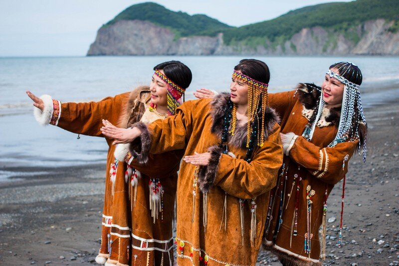
Численность
В России проживает около 3 тысяч ительменов. Основное население — Камчатский край (сёла Ковран, Паланка, Тигиль). Название «итъэнмэн» означает «живущие здесь, на земле».
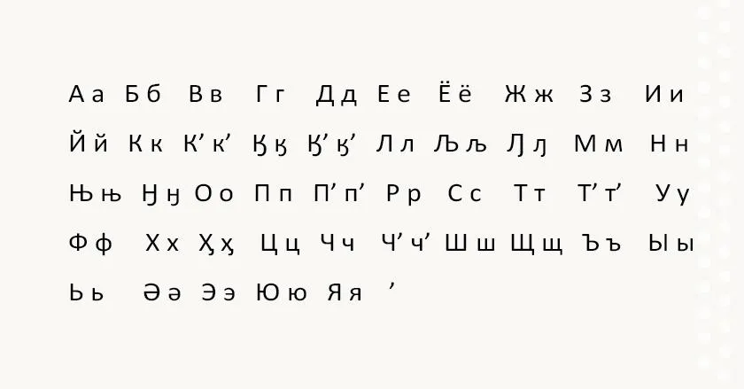
Язык
Ительменский язык относится к чукотско-камчатской семье. Считается самым архаичным в семье, сохранившим древние черты. Имеет сложную систему глаголов. Использует кириллицу с 1986 года.
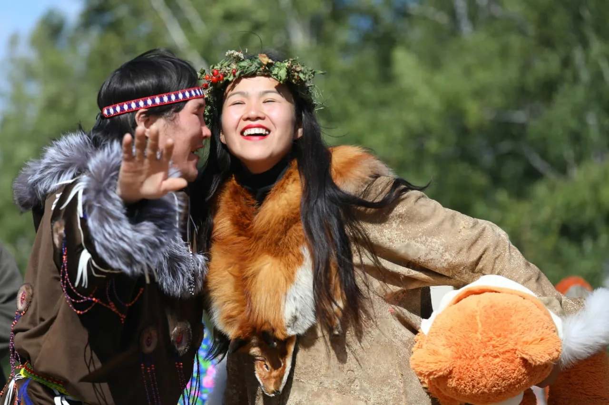
Религия
Традиционные верования — анимизм и шаманизм. Культ духов природы, хозяев гор и рек. С XVIII века распространилось православие. Сохранились древние обряды инициации и поминовения.
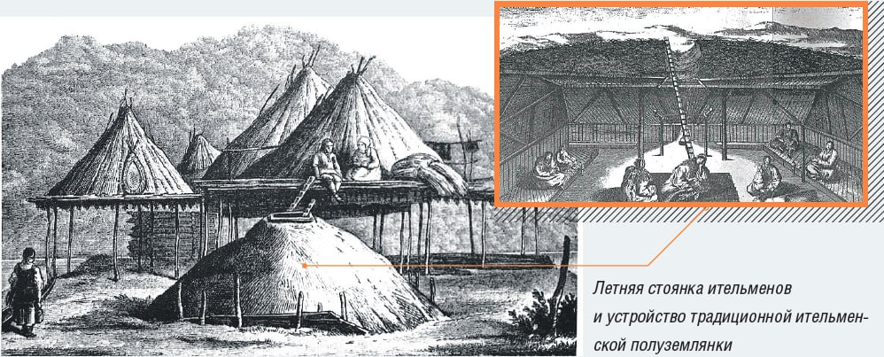
Расселение
Ительмены традиционно населяли западное побережье Камчатки от Тигиля до Коврана. Жили вдоль рек, богатых лососём. Основные посёлки — Тигиль, Ковран, Паланка.
🎭 Традиции и культура
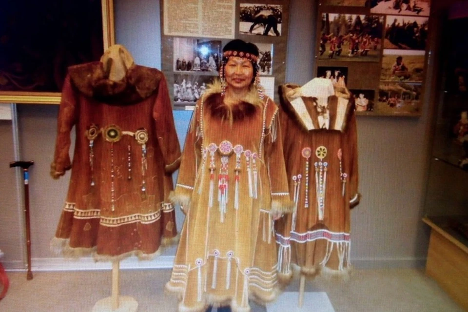
Национальный костюм
Костюм из шкур лосей, оленей и собак. Женщины носили «камлейка» (платье с капюшоном), украшенное бисером. Мужчины — «камлейка» или «парка». Обувь — «пычки» из шкур с мехом наружу.
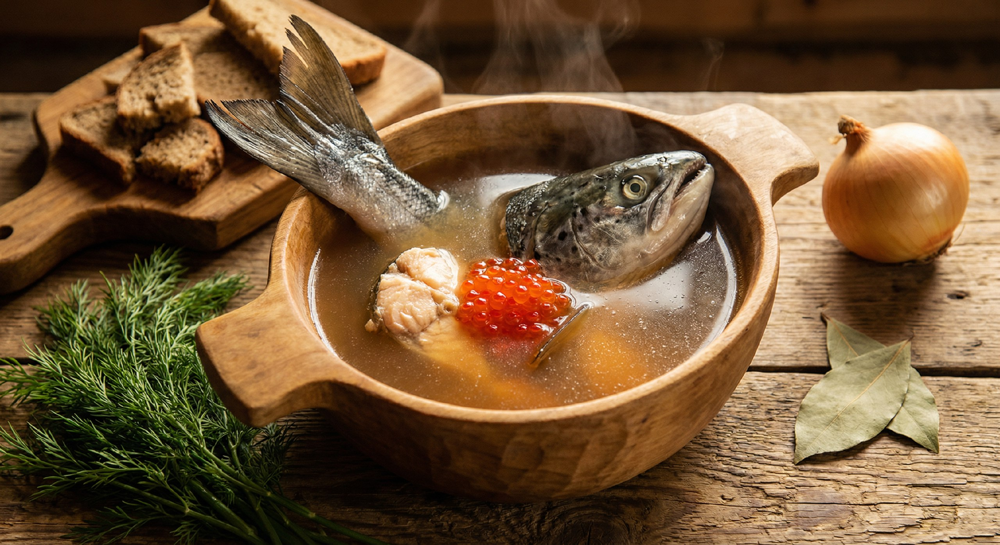
Кухня
Рыба (свежая, сушёная, копчёная), красная икра, мясо лося и медведя, ягоды (морошка, голубика), грибы, съедобные коренья. Напиток «севка» — бульон из рыбы. Традиционное блюдо — «копытце».
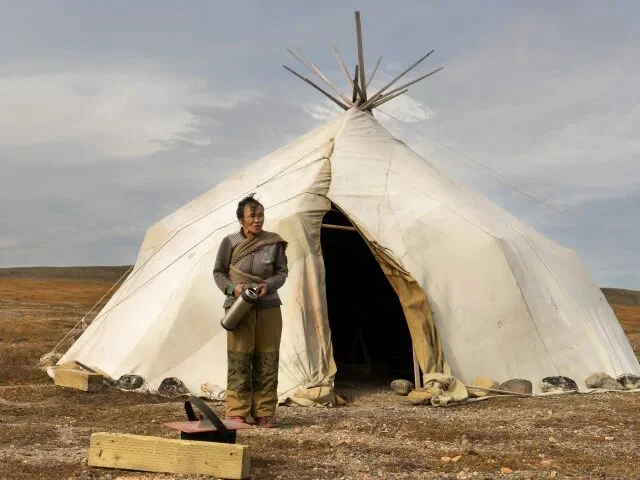
Жилище
«Яранга» — коническое жилище из жердей, покрытое оленьими шкурами. Внутри — «чадра» (внутренняя палатка) из шкур. Зимой использовали полуземлянки «палатка» с печью-каменкой.
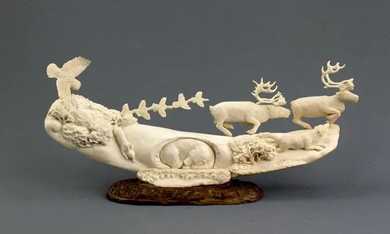
Ремёсла и искусство
Уникальная резьба по кости лосося и оленя, плетение корзин из ивовой лозы, вышивка бисером. Традиционные ловушки для рыбы и зверя. Народные сказки про хозяев тайги и рек.
🎉 Народные праздники
-
Праздник первого улова
Весенний обряд благодарности духам воды. Первую рыбу возвращают в воду с мольбами о богатом улове на весь сезон.
-
Праздник медведя
Древний обряд после удачной охоты на медведя. Танцы, песни, угощения. Медведь — священное животное, «хозяин тайги».
-
День ительменской культуры
Праздник в Тигиле. Фольклорные выступления, конкурсы национальных костюмов, ярмарки ремёсел, рыбацкие соревнования.
-
Обряд инициации
Древний обряд посвящения юношей во взрослые. Испытания выносливостью, знание традиций, шаманские ритуалы.
📸 Галерея
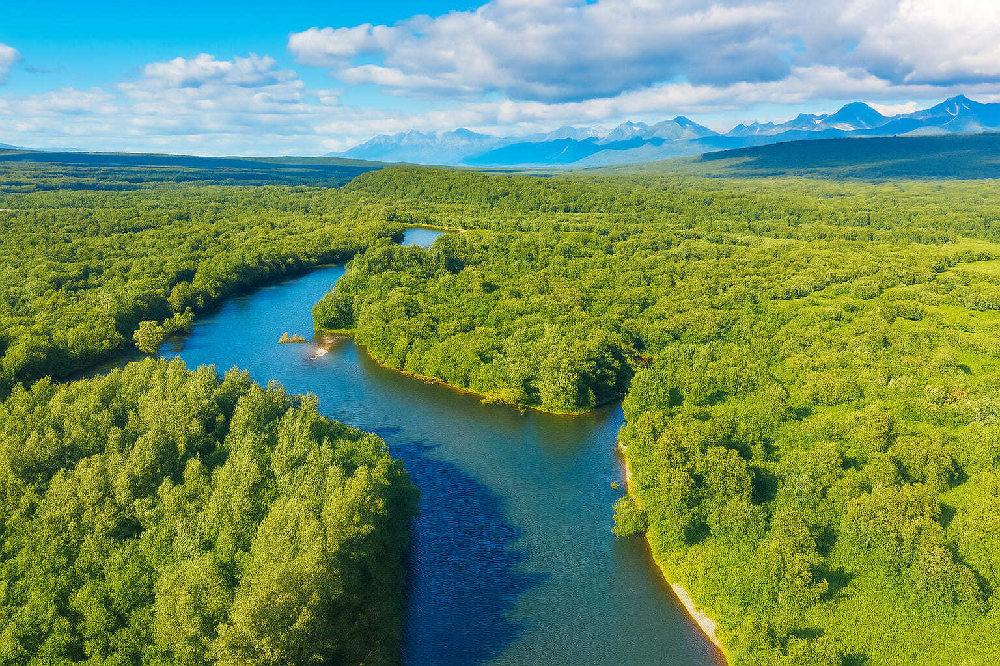
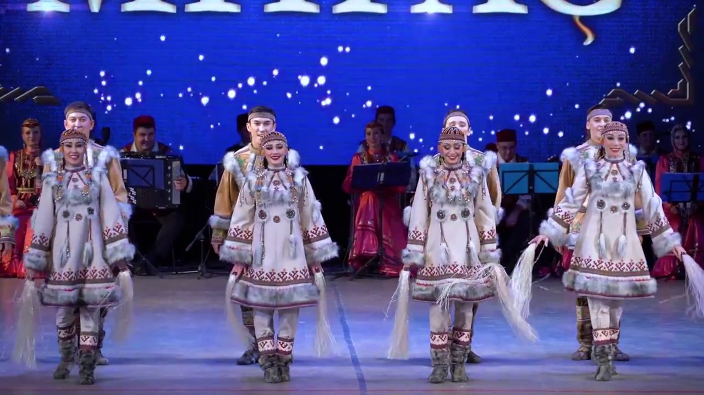
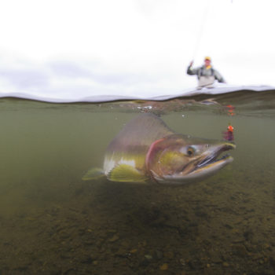
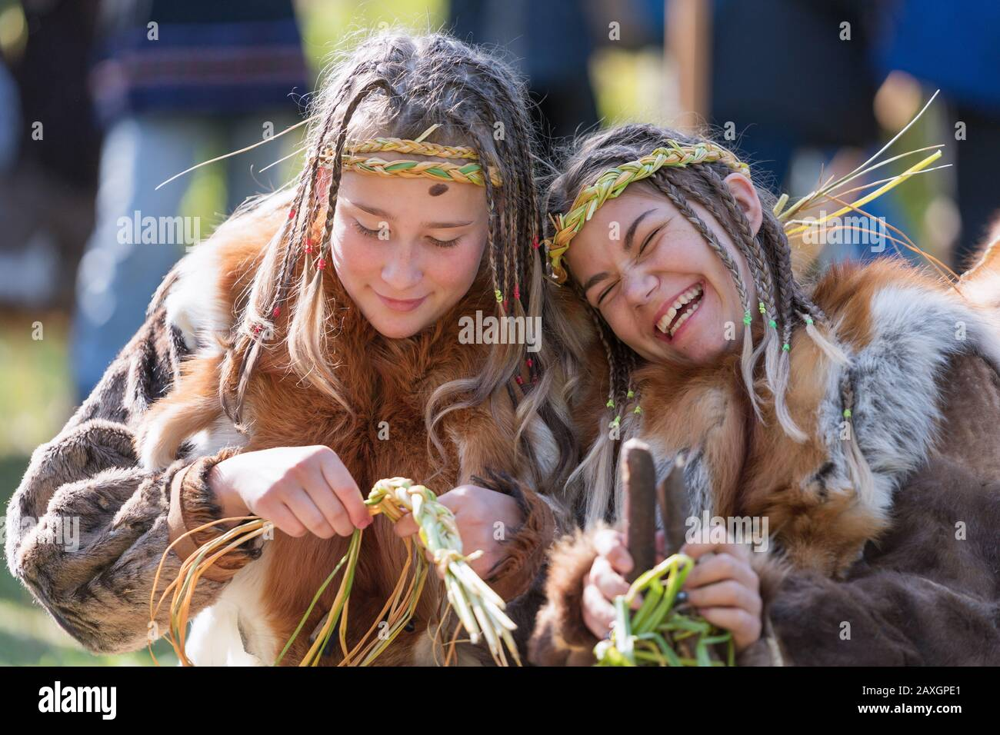
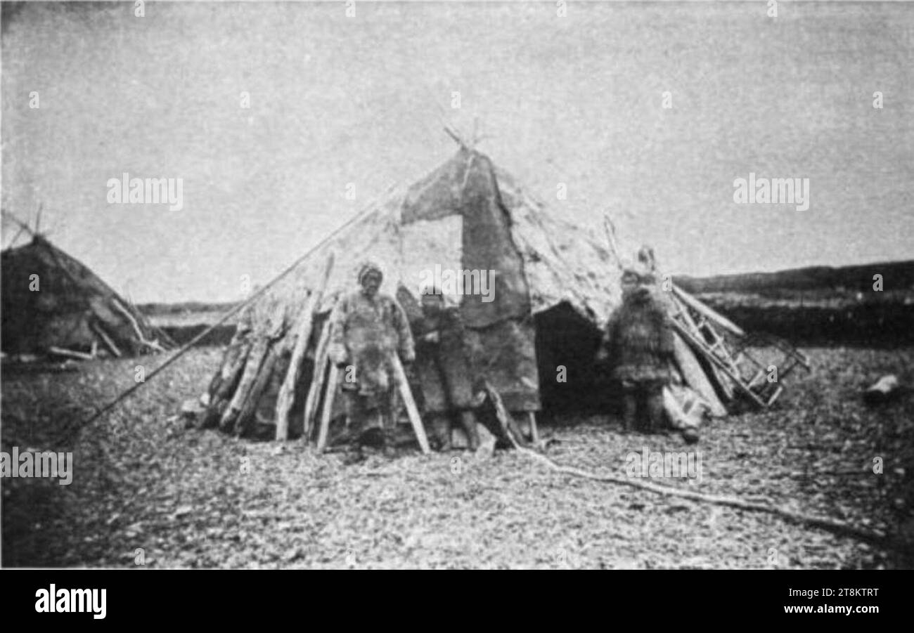
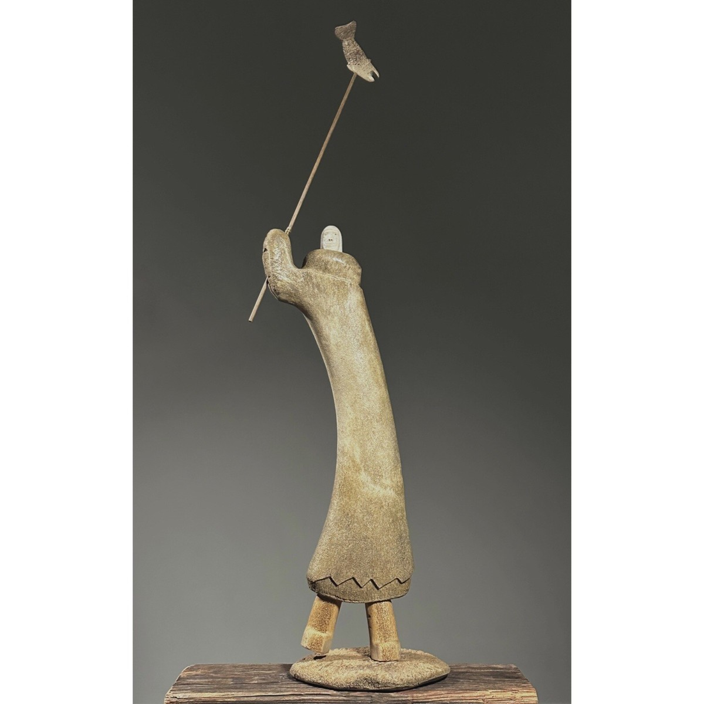
💡 Интересные факты
🌋 Камчатка
Ительмены живут на «земле огня и льда» — полуострове с вулканами, гейзерами и богатейшей речной системой.
🐟 Рыбные места
Ительмены знали каждое рыбное место на реках. Передавали знания о нерестилищах из поколения в поколение.
✍️ Язык
Ительменский язык получил письменность только в 1986 году. До этого знания передавались устно. Сейчас язык находится под угрозой исчезновения.
🎯 Викторина: Насколько хорошо вы знаете культуру ительменов?
Ответьте на вопросы на основе информации с этой страницы.